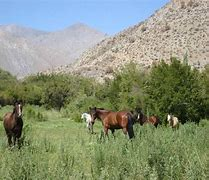
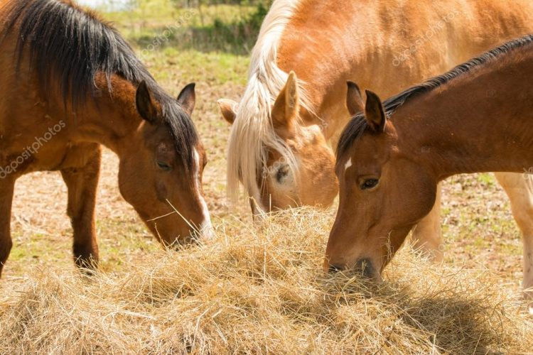
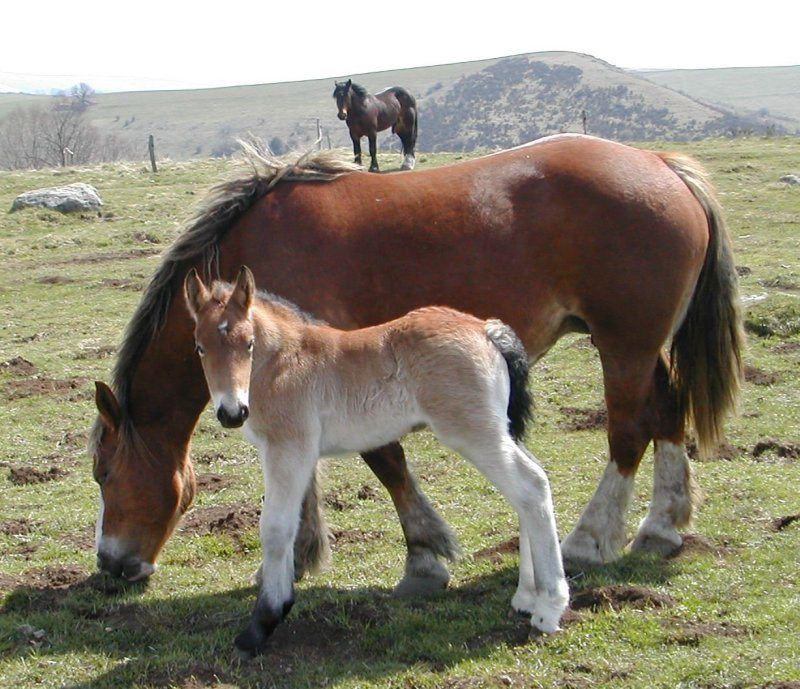
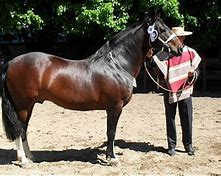

habitad
el hábitat del caballo chileno abarca una amplia variedad de regiones geográficas y climáticas en Chile, desde zonas áridas en el norte hasta áreas más húmedas en el sur, así como áreas montañosas en la Cordillera de los Andes.
Esta adaptabilidad es una característica importante de la raza, que ha sido criada a lo largo de generaciones para sobrevivir y prosperar en diversas condiciones ambientales.
A lo largo de los años, ha sido criado selectivamente para sobrevivir y prosperar en diversas regiones de Chile, lo que lo convierte en un animal versátil y resistente que puede enfrentar una variedad de desafíos naturales.

.jpg)
ubicacion geografica
| Geográfica | Características del Hábitat |
|---|---|
| Zona Central y Norte | |
| Zona Sur | |
| Cordillera de los Andes |
Habitos alimenticios
Los caballos son herbívoros con un sistema digestivo delicado, lo que requiere una alimentación cuidadosamente controlada para prevenir enfermedades como cólicos y gastritis.
Su estómago pequeño solo puede procesar pequeñas cantidades de comida a la vez, por lo que es recomendable proporcionarles raciones pequeñas con intervalos cortos entre comidas.
La cantidad y tipo de alimento que un caballo necesita varía según varios factores, como su actividad física, necesidades individuales, raza, edad, salud dental y el espacio disponible para vivir.
Por ejemplo, un caballo que realiza actividades físicas intensas requerirá una dieta acorde a su nivel de ejercicio.
A medida que un caballo envejece, puede perder la capacidad de absorber nutrientes eficientemente, lo que significa que podría necesitar una dieta con nutrientes fácilmente absorbibles en cantidades mayores.
En cuanto a su dieta, los caballos se alimentan principalmente de hierbas. Sin embargo, la dieta puede diferir según su propósito, y se puede dividir en tres categorías principales: pasto, heno y concentrados.
Estas categorías se adaptan a las necesidades específicas de los caballos según su actividad y requerimientos nutricionales.

reproductivos
En cautiverio, el comportamiento reproductor del caballo difiere notablemente del observado en estado salvaje, lo que puede afectar su fertilidad.
Mientras que la fertilidad de una yegua en libertad alcanza hasta un 95%, en cautividad esta cifra puede reducirse a la mitad.
El conocimiento del comportamiento sexual natural del caballo es esencial para un manejo adecuado en cautividad.
Durante el período de celo, la yegua atrae a los machos mediante la liberación de feromonas y secreciones, lo que desencadena el cortejo por parte del caballo.
Durante el cortejo, el caballo realiza una serie de movimientos sistemáticos, como mirar a la hembra de manera insistente, relinchar constantemente con energía, levantar las orejas y mostrar un mayor volumen corporal doblando el cuello.
También puede marchar elegantemente delante de la hembra y mordisquear suavemente su crin para llamar su atención.
Si la hembra consiente, se produce la monta, que dura hasta 45 segundos y la eyaculación ocurre aproximadamente a los 15 segundos de penetración.
La gestación de una yegua dura alrededor de 11 meses y medio.

estado de conservacion
Los caballos chilenos, en términos generales, son altamente apreciados por su resistencia y adaptabilidad a diferentes condiciones climáticas.
Sin embargo, el estado de conservación específico de los caballos chilenos puede variar dependiendo de diversos factores, como la preservación de las razas autóctonas,
los programas de cría selectiva, y la protección de su hábitat natural.
En Chile, existen iniciativas para conservar las razas de caballos nativos, como el Caballo Chileno y el Caballo de Raza Chilena, a través de programas de cría controlada y preservación de su patrimonio genético.
Sin embargo, al igual que en muchos otros lugares del mundo, los caballos chilenos también enfrentan desafíos en términos de pérdida de hábitat, presión por parte de la urbanización y otros factores ambientales y sociales que pueden afectar su estado de conservación.
